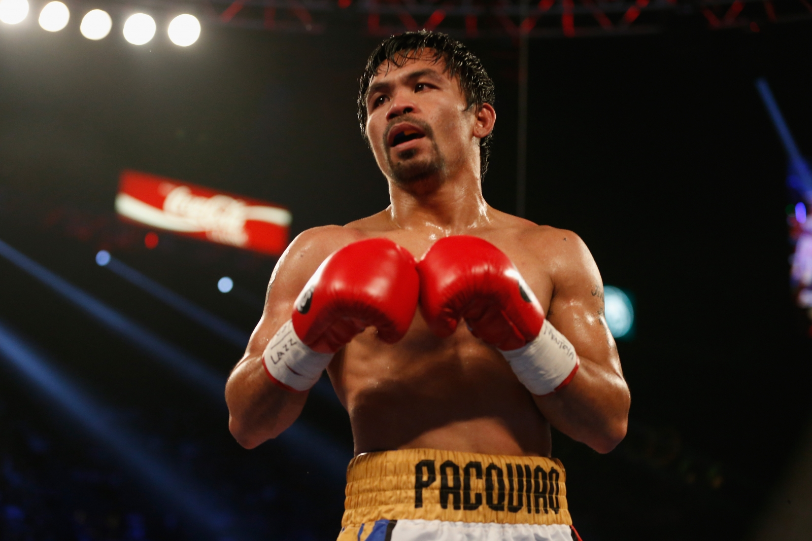

Muhammad Ali
Muhammad Ali az egyik legismertebb boxoló a világon. 56 győzelmet aratott profi karrierje során.
„ Ha valaki olyan nagy, mint én, nehéz szerénynek lenni ” – Muhammad Ali
1967-ben megtagadta a katonai szolgálatot, ezért a tettéért az 1960-as nyári olimpia félnehézsúlyú (75–81 kg) bajnokát ötévi börtönre, illetve 10 ezer dollár pénzbírságra ítélték, a Bokszvilágszövetség (WBA) pedig megfosztotta bajnoki címétől. 1999-ben a Nemzetközi Olimpiai Bizottság az évszázad legjobb sportolójának választotta.
Manny Pacquiao
Manny Pacquiao a Fülöp-szigeteki legenda, aki világbajnokként 8 súlycsoportban nyert.
Mike Tyson
Az egyik leghíresebb bokszoló, nem csak tehetsége, hanem a ringen kívüli viselkedése miatt is. 58 profi mérkőzéséből 50-et megnyert, 44-et kiütéssel, 6-szor szenvedett vereséget, 2-szer nem hirdettek győztest.
Hirhedt beceneve: 'Iron' Mike Tyson
Papp László
Papp László közismert nevén Papp Laci - háromszoros olimpiai bajnok, kétszeres európa bajnok és hétszeres magyar barjnok ökölvívó, de edzői és sportvezetői szerepet is betöltött.
Hirhedt beceneve: Görbe
Papp Lászlót mai napig az egyik legjobb és legnagyobb magyar boxolóként tartják számon. Haláláig veretlen maradt.
Máig érthetetlen, de politikai okokból sose küzdhetett világbajnoki címért, de akkoriba a világ legjobb boxolói közé tartozott.